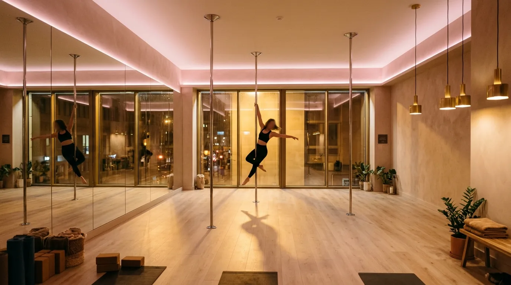

Каждый день 8:00–22:00
Студия пилона на Боровой
Пробное занятие для тех, кто ни разу не стоял у пилона. Выберите свою ступень и удобную группу и запишитесь за минуту, без звонка.

- Боровая ул., 116, 3 этаж, офис 312
- Каждый день 8:00–22:00, по записи
- Оплата наличными или переводом
Восхождение
С какой ступени начнёте?
Выберите уровень, и в расписании останутся только ваши группы.
Расписание
Группы на неделю
занятосвободно6 пилонов в группе
Направления, время и число мест здесь примерные. Пришлёте своё расписание, поставлю его.
Пробное занятие
Запись в пару нажатий
Вы записаны на пробное
Первое занятие
Что взять с собой
- Шорты и топ. За пилон держатся кожей ног и рук, в лосинах будете соскальзывать.
- Воду. Занятие идёт без долгих перерывов.
- Кожу без крема. В день занятия лучше не мазаться кремом и маслом, иначе пилон будет скользким.
- Руки без колец и браслетов. Они мешают хвату и царапают пилон.
Обувь не нужна: на пилоне занимаются босиком.
Вопросы
Перед первым разом
Никогда не занимались, и растяжки нет. Можно?
Да. Первая ступень для тех, кто пришёл с нуля: сила и растяжка приходят на занятиях.
Сколько человек в группе?
Не больше [число], у каждого свой пилон. Сколько мест осталось, видно в расписании.
Как оплатить?
Наличными или переводом с карты.
Не получается прийти. Что делать?
Нажмите «Перенести» в напоминании или напишите нам. Место освободится для другого человека.
Как найти студию?
Боровая улица, 116, третий этаж, офис 312. На двери табличка Olymp Pole.
Olymp Pole
- Адрес
- Санкт-Петербург, Боровая ул., 116
3 этаж, офис 312 - Часы
- Каждый день 8:00–22:00
по предварительной записи - Телефон
- +7 960 240-80-32